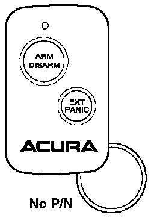

1991-03 NSX/1991-95 Legend/1992-94 Vigor/1996-97 2.5TL
*1991-03 NSX with dealer-installed keyless entry system*1991-95 Legend with dealer-installed keyless entry system
1992-94 Vigor with dealer-installed keyless entry system
1996-97 2.5TL with dealer-installed keyless entry system

Programming the Transmitter
This transmitter is not programmable.
Ordering a Transmitter
Transmitters can be ordered directly from Kenwood USA only by authorized Acura dealers. Send a completed order form (copy it from the Accessory Replacement Parts section of the Dealer Parts Price List) along with a dealer check for $30.00 (payable to Kenwood U.S.A. Corp.) to this address:
Kenwood Service Corp.
P.O. Box 22745
Long Beach, CA 90801-5745
On the order form, you must include the serial number of the keyless control unit or the number from one of the original transmitters.
If you need a transmitter shipped overnight, fill out the order form, then call Kenwood at (800) 852-4690, or fax them at (310) 898-1029 (weekdays from 8:30A.M. thru 4:00 P.M. Pacific time). You will need to give the information on the order form to the Kenwood representative. The transmitter will be sent to your dealership COD. Additional shipping and handling charges will be applied to the order.
Batteries for the Transmitter
The battery number is CR1220. Each transmitter uses two batteries.